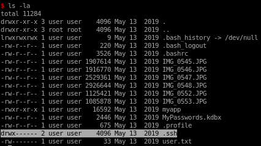
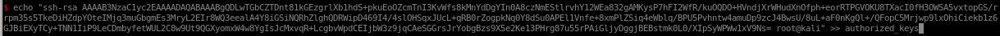

Index
- nmapAutomator
- http
- initial foothold
- ghidra
- buffer overflow
- privilege escalation
- user/root
- lessons learned
dropping ssh key
Looking into user's /home directory
to generate an ssh keypair:
ssh-keygen -f user
chmod 600

copy the contents of our public key we generated

and echo it into .ssh/authorized_keys file on the box

echo <pubkey> >> authorized_keys

and now we can ssh in!
ssh -i <priv-key> user@10.10.10.147